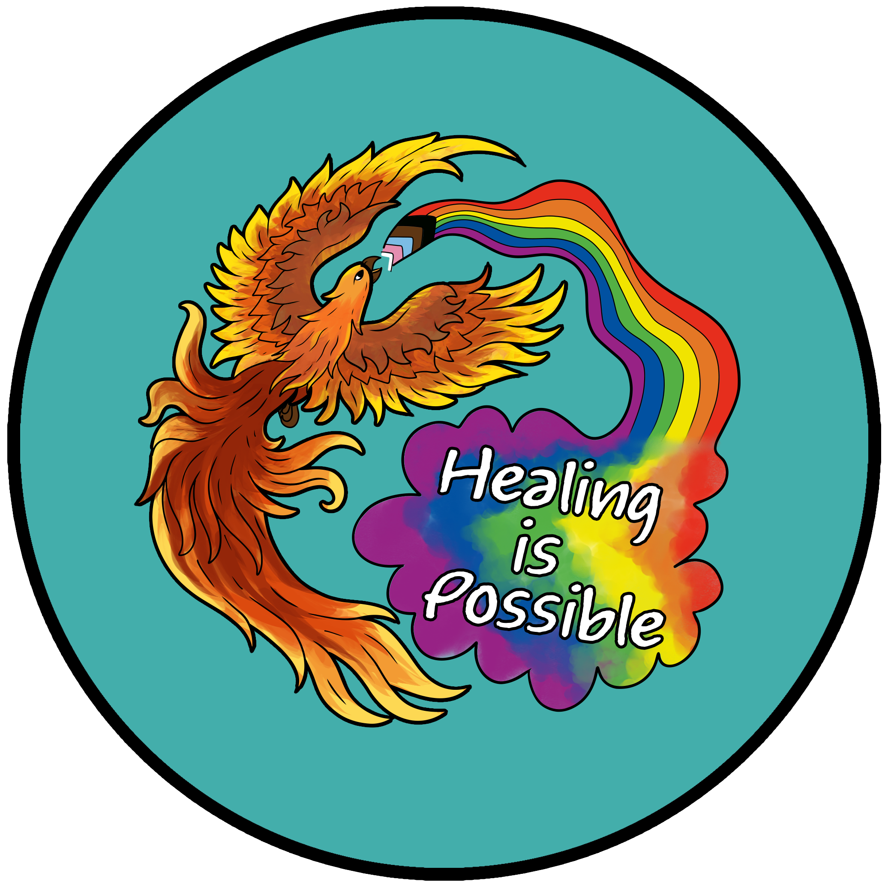

PhoenixGBVLab
PhoenixGBVLab
A Temple University public health research lab focused on trauma recovery, gender-based violence, and building more supportive systems for survivors.

Placeholder
Publications
Recent scholarship and ongoing outputs from PhoenixGBVLab.
Team
Learn more about the researchers behind the lab and use the team page for fuller member profiles.